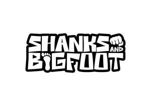

Trade Mark Journal No.2026/003 16 January 2026
UK00004316154 26 December 2025 (41)

- Class 41
- Performance of music; Presentation of musical performance; Musical performance services; Performance of films; Performance of musical programmes; Music performance services; Live performance services; Performance of music and singing; Live band performance services; Performance of radio programmes; Performance of dance, music and drama; Presentation of musical performances; Production of stage performances; Musical performances; Presentation of orchestra performances; Theatrical shows provided at performance venues; Organization, production and presentation of theatrical performances; Organisation, production and presentation of theatrical performances; Musical floor shows provided at performance venues; Production of theatrical performances; Organisation of musical performances; Presentation of theatrical performances; Production of live performances; Theatrical performances; Theatre performances; Provision of live musical performances; Theatrical floor shows provided at performance venues; Theater performances; Presentation of circus performances; Music performances; Performances (Presentation of live -); Live performances (Presentation of -); Presentation of live performances; Organisation of live musical performances; Live musical performances; Presentation of live dance performances; Presentation of live comedy performances; Presentation of live performances by a musical group; Presentation of live entertainment performances; Live musical theater performances; Entertainment in the nature of orchestra performances; Entertainment services in the form of concert performances; Presentation of live show performances; Presentation of live performances by musical bands; Direction of music performances; Organisation of live performances; Entertainment in the nature of ballet performances; Entertainment in the nature of symphony orchestra performances; Entertainment in the nature of dance performances; Entertainment services in the form of musical vocal group performances; Provision of facilities for live band performances; Live performances by a musical band; Entertainment in the nature of gymnastic performances; Live music performances; Entertainment services in the form of musical group performances; Services providing entertainment in the form of live musical performances; Entertainment in the form of live musical performances (Services providing -); Band performances (Live -); Live band performances; Theatrical performances both animated and live action; Musical concert services; Arranging of music performances; Artistic management of performing artists; Live performances by a musical bands; Presentation of musical concerts; Entertainment services by stage production and cabaret; Artistic management of musical shows; Entertainment in the nature of live performances by musical bands; Production of musical recordings; Entertainment services in the nature of live performances of roller skating exhibitions and competitions; Production of musical videos; Entertainment services in the form of cinema performances; Show production services; Sporting results services; Presentation of live performances by rock groups; Audio recording and production services; Theatrical production services; Theatre production services; Production of musical works in a recording studio; Production of stage plays; Entertainment in the nature of live performances and personal appearances by a costumed character; Artistic management of theatre shows; Production of live entertainment features; Theater production services; Production of stage shows; Live show production services; Entertainment services performed by a musical group; Production of video tapes for corporate use in management educational training; Performing of music and singing.
rick live